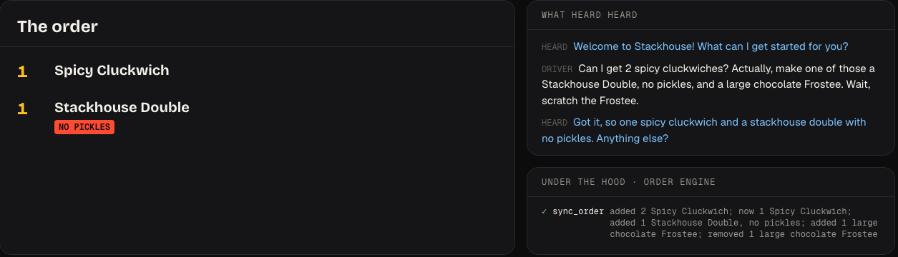
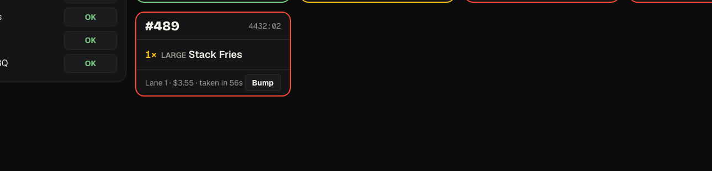
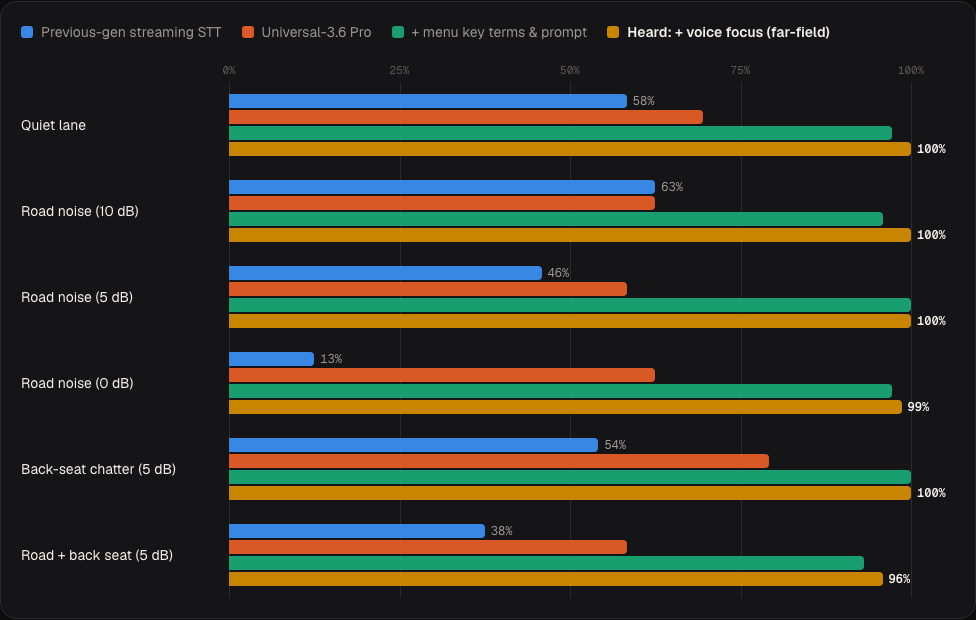
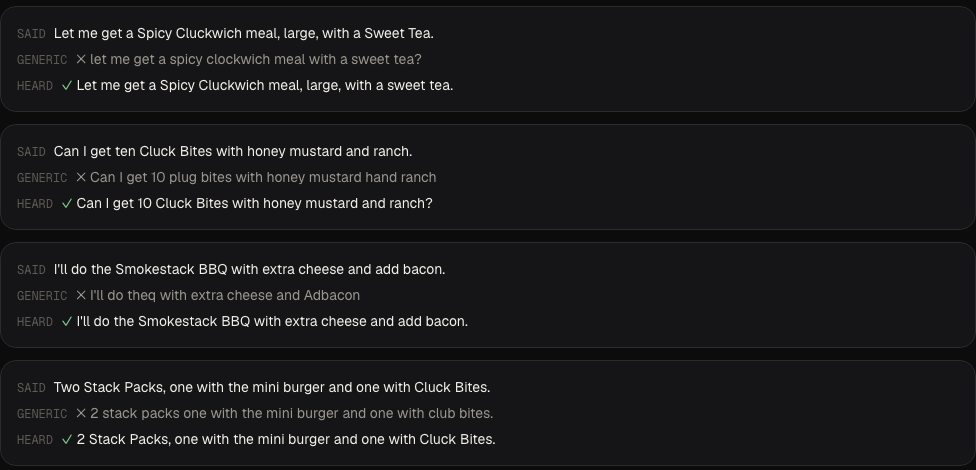

Hears the driver through engine noise and back-seat chatter, builds a verified order from what it actually heard, and keeps a person one sentence away.
Ended its IBM AI drive-thru test and pulled it from 100+ restaurants after viral misheard orders, like nine sweet teas instead of one.
Slowed its AI rollout after glitches and trolling, including a caller who ordered 18,000 waters just to reach a human.
Engines, traffic, kids in the back seat, a cheap speaker a metre away, and guests who change their mind mid-sentence.
Sources: CNBC, Restaurant Dive (Jun 2024); Jalopnik, AOL (2025). Full links in the repo: docs/sources.md
AssemblyAI Universal-3.6 Pro with voice focus (AssemblyAI lists it for drive-thru speakers) and the menu as key terms, so “Cluckwich” survives the engine noise.
The AI runs the conversation but never writes the order. A deterministic parser builds it from the transcript; a tested engine owns every item, price and total.
“Can I talk to a person?” works in one sentence. Spanish, English or both. Tickets go straight to the kitchen screen.

Exactly right, on the live Voice Agent API.
Every change shows the words it came from and the rule that applied: “make one of those…” takes one off the existing line.
Read back, then sent. No keyboard.

NO PICKLES in red on the ticket, the moment the guest confirms.
“Oh wait, a cola” after the total updates the same ticket.
Frostee machine down? Mark it, and Heard stops selling it immediately.
Road noise as loud as the driver:
of orders exactly right with generic speech-to-text
with Heard. 96–100% in every condition.

24 order lines · 6 English accents · streamed in real time through AssemblyAI · mean of 2–3 sessions per cell · same parser as the live agent. Synthetic voices and noise; reproducible with npm run bench.

“Cluck Bites” → “plug bites”
“Smokestack BBQ” → “theq”
“Spicy Cluckwiches” → “USPYC Club witches”
In the live demo, judges see this side by side for their own voice: Hear it both ways.
Live testing showed the managed LLM returned an empty reply whenever a turn needed several changes. A parameterless tool is called reliably, and the order becomes deterministic and testable.
| Nine sweet teas instead of one | Quantities parsed deterministically, read back before sending |
| 18,000 waters | Quantity caps with a friendly double-check |
| Trapped with a bot | A person is one sentence away; crew alarm on the kitchen screen |
| Invented items or prices | Impossible: the AI never writes the order |
| Pushy upselling | At most one offer per order |
Quick-service chains and franchisees. Proposed model: a monthly subscription per drive-thru lane.
Why switch: accuracy you can measure before you deploy, orders that are never invented, a human always one sentence away, and bilingual service.
Presto, SoundHound and Wendy’s FreshAI (with Google Cloud) show the demand. Heard’s difference: hearing-first, deterministic orders, and published accuracy.
Illustrative only: 500 drive-thru orders a day with 2% fewer remakes is 10 orders a day, about 3,650 a year per store.